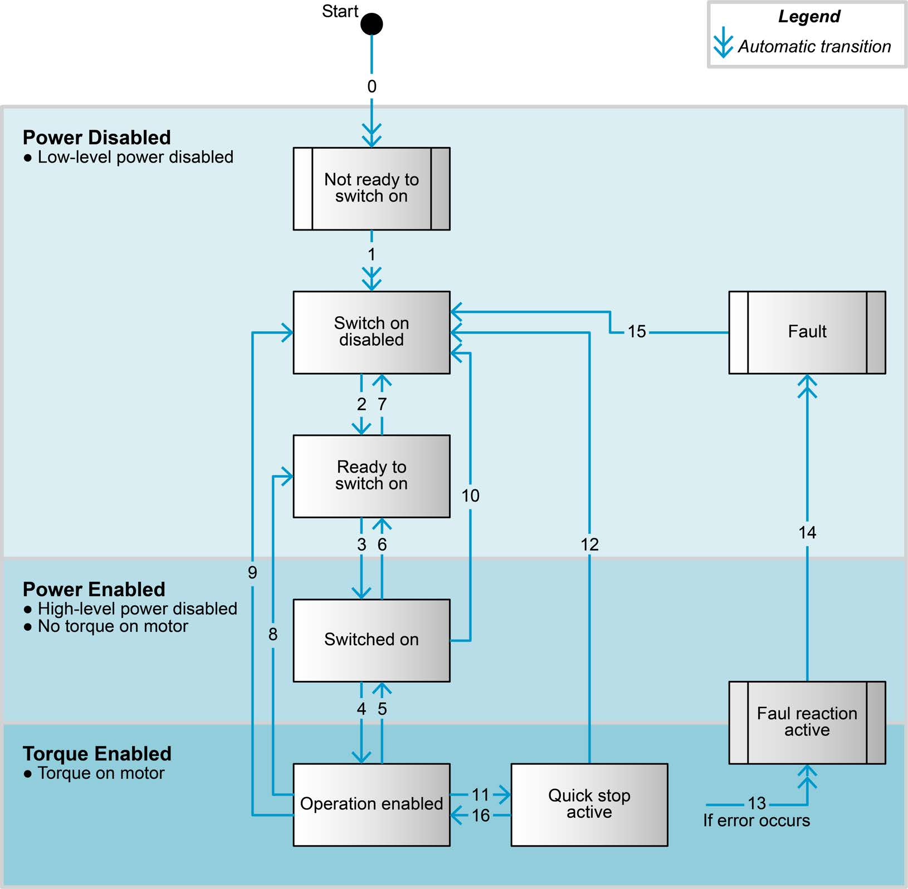

The CiA 402 state machine#
Every CiA 402 drive has the same state machine. It decides whether power reaches the motor, and nothing moves until it is in Operation enabled.
The eight states#
| State | Power to the motor | What it means |
|---|---|---|
| Not ready to switch on | no | the drive is booting |
| Switch on disabled | no | idle, the state after boot and after Disable() |
| Ready to switch on | no | |
| Switched on | no (power stage on, no torque) | |
| Operation enabled | yes | the motor follows commands |
| Quick stop active | yes, braking | after a quick stop |
| Fault reaction active | yes, braking | an error occurred; the drive is stopping the motor |
| Fault | no | stopped after an error, waiting for a fault reset |
The drive reports its state in the Statusword (0x6041) and is commanded through the
Controlword (0x6040). EposLib decodes one and builds the other for you:
auto state = motor.GetState().Refresh().GetValue(); // signals::State
std::printf("%s\n", epos4::signals::ToString(state));
signals::IsPowerDisabled(state) is true for the states in which no power reaches the
motor - the manual's «Power Disable» - which is when the axis, gear and encoder objects
may be written.

stateDiagram-v2
direction LR
[*] --> NotReady: power on
NotReady: Not ready to switch on
SOD: Switch on disabled
RTSO: Ready to switch on
SO: Switched on
OE: Operation enabled
QSA: Quick stop active
FRA: Fault reaction active
F: Fault
NotReady --> SOD: 1 (automatic)
SOD --> RTSO: 2 Shutdown
RTSO --> SO: 3 Switch on
SO --> OE: 4 Enable operation
OE --> SO: 5 Disable operation
SO --> RTSO: 6 Shutdown
RTSO --> SOD: 7 Disable voltage
OE --> RTSO: 8 Shutdown
OE --> SOD: 9 Disable voltage
SO --> SOD: 10 Disable voltage
OE --> QSA: 11 Quick stop
QSA --> SOD: 12 Disable voltage
FRA --> F: 14 (automatic)
F --> SOD: 15 Fault reset
QSA --> OE: 16 Enable operation
OE --> FRA: 13 errorEnable() follows 2, 3, 4; Disable() sends Disable voltage (7, 9, 10 or 12, from wherever
the drive is); ClearFault() performs 15; QuickStop() is 11 and Enable() from there is 16.
Enable and disable#
Shutdown (2) Switch on (3) Enable operation (4)
Switch on disabled ───────────▶ Ready to ────────────▶ Switched ──────────────────▶ Operation
▲ switch on on enabled
│ │
└─────────────────────────── Disable voltage (9) ────────────────────────────────┘
Enable() walks the drive to Operation enabled, one transition per round trip: from
Switch on disabled that is three commands. It returns false on timeout (1 s by default)
or if the drive is in Fault - it never clears a fault on its own.
Disable() sends Disable voltage and waits for Switch on disabled. It succeeds even on
a faulted axis - in Fault no power reaches the motor, which is all Disable() promises -
because being unable to shut down is worse than an inaccurate report of why.
if (!motor.Enable()) {
if (motor.IsFaulted()) {
std::printf("%s\n", motor.DescribeLastError().c_str());
}
}
// ... move ...
motor.Disable();
How the motor comes to rest when power is removed is not decided by the library: it is the
drive's shutdown option code (0x605B) and disable operation option code (0x605C).
See Brake, stops and protection.
Faults#
When the drive detects an error it goes through Fault reaction active - stopping the
motor as its fault reaction option code (0x605E) says - into Fault, and sends an
EMCY. Leaving Fault takes a fault reset: a rising edge on Controlword bit 7.
if (motor.IsFaulted()) {
std::printf("%s\n", motor.DescribeLastError().c_str()); // cause, effect, recovery
if (motor.ClearFault()) {
motor.Enable();
}
}
ClearFault() produces the edge, and for the two faults whose recovery starts with an NMT
reset communication - a lost heartbeat (0x8130) and CAN passive mode (0x8120) - it sends
that first and waits for the master to boot the node again. It returns false if the
drive faults again immediately, which means the cause is still there.
Faults are never cleared for you
Enable() stops at a fault instead of resetting it, deliberately. A fault is a physical
failure - overcurrent, following error, overtemperature - and re-enabling on its own
means pushing against the cause again. In a loop it becomes reset, fault, reset, fault,
flooding the bus. Clearing is always an explicit decision of the application.
Some faults clear the position when they are reset (signals::ClearsPosition()): the axis is
no longer referenced and must be homed again. The Device error codes
mark them.
Quick stop and halt#
| Effect | State afterwards | |
|---|---|---|
Halt() |
decelerates on the profile deceleration (or as 0x605D says) |
stays in Operation enabled |
QuickStop() |
decelerates on the quick stop deceleration (0x6085) |
Quick stop active |
Disable() |
removes power after the shutdown option's reaction | Switch on disabled |
From Quick stop active, Enable() returns to Operation enabled (transition 16).
The pieces underneath#
The logic is in eposlib::core and can be used and tested without a bus:
core::Decode(statusword)- the state, orstd::nulloptfor a pattern that matches none.core::Controlword- builds the command words of Table 2-7 as a read-modify-write, keeping the operating-mode bits and producing the fault-reset edge.core::PlanStep(state, goal)- "what do I send this cycle" for a goal ofkOperationalorkDisabled. Stateless, and never emits a fault reset.
See The core library.